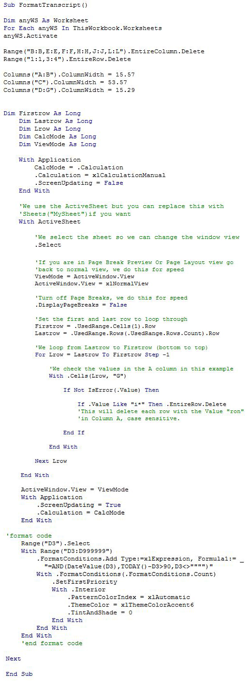
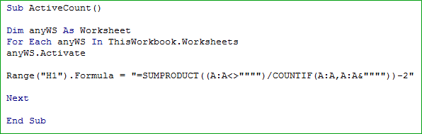
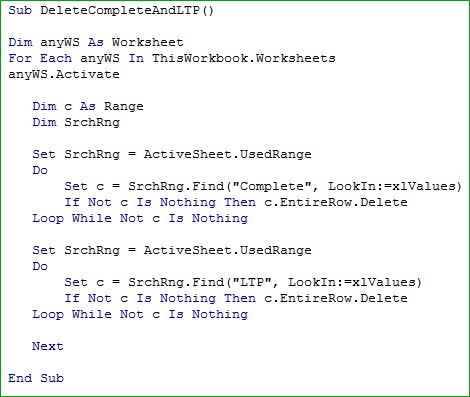

Macro-Enabled LMS Report
Due to limited reporting flexibility of the LMS, the Training Administrator had to spend hours customizing monthly transcript reports before sending them to store managers. In addition to the time hog, the customization process was also prone to human errors, resulting in even more time required for revisions. To automate much of this tedious process, I added VBA Macros to the raw Excel report generated by the LMS. Time to complete this monthly task was decreased from hours to minutes!
Here's a breakdown of the code used.
Macro 1 Functionality:
- Removes unwanted columns and rows
- Reformats column widths
- Removes associates with "Inactive" status in the LMS
- Highlights course registrations past 90 days

Macro 2 Functionality:
- Counts number of associates with "Active" status in the LMS
- Displays this number in cell H1 for easier cross reference with master list

Macro 3 Functionality:
- Removes all courses with "Complete" status
- Removes all leadership training courses
